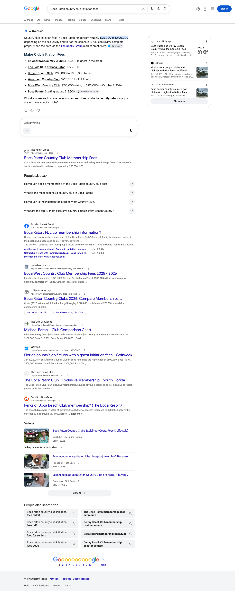
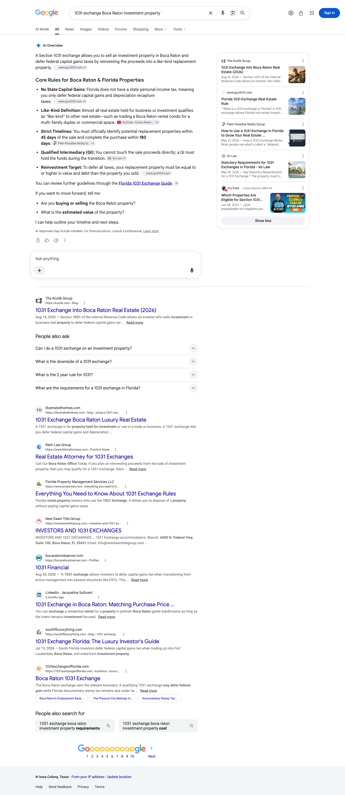
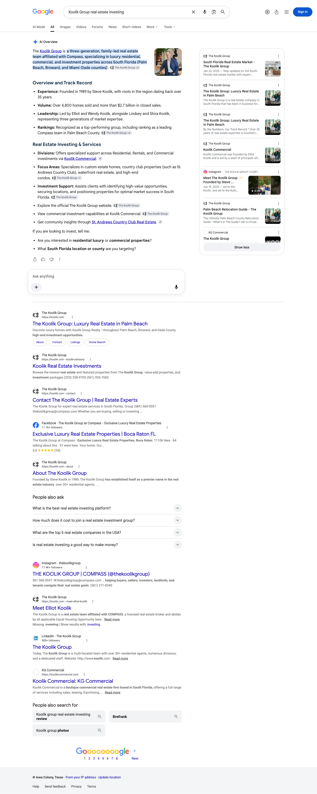

August 2026 | The Koolik Group
Executive summary
In August, a page on one of your own sites was named as a source on fourteen of the twenty-two buyer questions we track for you, across Google AI Overviews, Perplexity and ChatGPT. That set includes every investment question on the list and both country club fee questions.
Perplexity is your widest surface, naming a Koolik page on fourteen of the twenty-two. Google wrote an AI Overview on twelve of the twenty-two, and on six of those it drew on a page of yours. ChatGPT names you on eight of the twenty-two, concentrated on the ground where your name and a specific community are most tightly linked.
The investment library is the clearest result of the month. Every investment question we track is cited on at least one engine, and the two guides carrying most of that work are each named as the source on four separate questions. Both country club fee questions are cited on all three engines, and a single comparison guide answers both of them. On Google, the rows it named from that library are the 1031 exchange question, the Boca versus Delray comparison and the country club rental rules question.
Twenty-three different pages across your sites were carried as sources this month, and that breadth is the part that compounds. The Addison Reserve community site earns citations on its own name as a second site of yours, and on the Addison homes-for-sale question it is the site the answers reach for.
Two notes on scope before the numbers. First, the tracked set grew this month. Four East Boca waterfront questions were added late in August, covering The Sanctuary, Golden Harbour, selling a waterfront home, and the Intracoastal comparison. Those are watched from a standing start, so the reading of the ground you have actually been working is fourteen of eighteen, with four new questions sitting alongside it. They are on the matrix so you can see the starting line for that ground. The oceanfront condo questions are deliberately not tracked yet, because the guide that answers them is written and waiting on your decision, and it would not be fair to measure you on a page that is not live. They go on the list the month it publishes. Second, the citation tiles below read out of all twenty-two tracked questions, and the Google search click count covers koolik.com over the window printed on that tile, and does not include the Addison Reserve site.
Citation matrix
✓ Cited: your site is among the sources that answer drew on
– Not cited in the reading for that column
◦ Google did not generate an AI Overview for this question, so there was no AI answer to be cited in
| Buyer question | Google AI Overview | Perplexity | ChatGPT | |
|---|---|---|---|---|
| Boca Raton country club initiation feeskoolik.com | ✓ | ✓ | ✓ | |
| Addison Reserve membership initiation fee 2026addisonreserverealestate.com, koolik.com | ✓ | ✓ | ✓ | |
| Addison Reserve country club homesaddisonreserverealestate.com, koolik.com | ◦ | ✓ | ✓ | |
| Addison Reserve Boca Raton homes for saleaddisonreserverealestate.com | ◦ | ✓ | ✓ | |
| Koolik Group Boca Raton real estatekoolik.com | ◦ | ✓ | ✓ | |
| Koolik Group real estate investingaddisonreserverealestate.com, koolik.com | ✓ | ✓ | ✓ | |
| Boca Raton investment property guidekoolik.com | – | ✓ | – | |
| 1031 exchange Boca Raton investment propertykoolik.com | ✓ | ✓ | – | |
| Boca Raton rental property cash flowkoolik.com | – | ✓ | ✓ | |
| Rental property rules Boca Raton country club communitieskoolik.com | ✓ | ✓ | ✓ | |
| Boca Raton vs Delray Beach investment propertykoolik.com | ✓ | ✓ | – | |
| Boca Raton waterfront homes Intracoastal vs oceanfront vs canalkoolik.com | – | – | – | |
| St Andrews Country Club real estatekoolik.com | ◦ | ✓ | – | |
| Best place to live in Boca Ratonkoolik.com | – | ✓ | – | |
| Boca Raton luxury real estate complete guidekoolik.com | – | ✓ | – | |
| St Andrews Country Club Boca Raton homes for sale | ◦ | – | – | |
| Woodfield Country Club Boca Raton homes | ◦ | – | – | |
| Boca West Country Club homes for sale | ◦ | – | – | |
| Royal Palm Yacht Country Club Boca Raton homes | – | – | – | |
| The Sanctuary Boca Raton homes for sale | ◦ | – | – | |
| Golden Harbour Boca Raton waterfront homes | – | – | – | |
| Selling a waterfront home in East Boca Raton | – | – | – |
Reading the matrix. Fourteen of the twenty-two questions are cited on at least one engine. Perplexity accounts for fourteen, Google AI Overviews for six and ChatGPT for eight. Google produced no AI Overview at all on eight of the twenty-two, which is why that column carries circles on those rows rather than dashes: there was no AI answer on the page to be named in. A further two could not be read on Google inside this window, so they sit outside that column rather than counting against you. The rows still open are the shopping-shaped questions, club inventory and the newest waterfront and condo ground, and they are the targets set out at the end of this report. The domain line under a question names the Koolik-owned sites recorded as a source on that question this month, kept per question rather than per engine, so a question naming two sites means both were recorded on it during the month.
How to read the columns. Two sites are counted as yours here, koolik.com and the addisonreserverealestate.com community site, so a check mark on a row means one of the two was named among the sources for that question. Two things are worth knowing about how to read the columns. Perplexity and ChatGPT were read on multiple days between August 7 and August 25. Google’s AI Overview column is different: it is a single reading of each question taken on August 29, read from the page itself rather than across the month, so treat it as a snapshot. A dash there means your site was not among the sources Google showed on that one reading, which is not the same as being absent for the month. Second, all three engines rebuild their answers on every run and Google localizes its answers by where the search is run from, so a check mark means your site was among the sources on at least one reading in that window, not that it appears on every run. The reverse matters just as much: a question without a mark is one we have not seen you carried on yet, not a settled absence, because a different reading on a different day can return a different set of sources. Source lists were read as first rendered, so any list of sources named here is what the engine showed first, not a complete inventory.
Story one
Perplexity names a Koolik-owned page on fourteen of the twenty-two questions, and it reaches across the whole map you have built: the investment set in full, the country club fee cluster, all three Addison Reserve questions, both brand questions, and the St Andrews, luxury and neighborhood guides. On these readings it is the one engine that named a page of yours on best place to live in Boca Raton, on the luxury complete guide and on St Andrews real estate.
The third column names the page on your own site that this engine drew on. Where a question named more than three of your pages, three are listed and the rest are counted.
Story two
Google does not build an AI Overview for every question. Across the twenty-two we track it wrote one on twelve, and on eight it returned listings, maps and business panels with no AI answer at all. The remaining two could not be read on Google inside this window, so they are held out of this column rather than counted against you. On the twelve where an Overview did appear, Google named a page of yours on six.
| Buyer question | Status | Your page carried as the source |
|---|---|---|
| Boca Raton country club initiation fees | Cited | Country club membership fees guide |
| Addison Reserve membership initiation fee 2026 | Cited | Country club membership fees guide |
| Koolik Group real estate investing | Cited | South Florida market blog index |
| 1031 exchange Boca Raton investment property | Cited | 1031 exchange investor guide |
| Rental property rules Boca Raton country club communities | Cited | Country club rental rules guide |
| Boca Raton vs Delray Beach investment property | Cited | Boca vs Delray investment comparison |



The open ground on this engine is well defined, and it is the useful half of this story. On the investment property guide and on rental property cash flow Google wrote an Overview this month and built it from other sources, and the same is true on best place to live and on the luxury complete guide. Each of those already has a live page of yours behind it that another engine names, so widening this column is a strengthening job on pages you own rather than a building job. That is the work in card four below.
Story three
ChatGPT names a Koolik-owned page on eight of the twenty-two questions. Its set sits exactly where your name and a specific community are most tightly linked: all three Addison Reserve questions, the market-wide country club fee question, both brand questions, and the two country club ownership questions covering rental rules and rental cash flow.
| Buyer question | Status | Your page carried as the source |
|---|---|---|
| Boca Raton country club initiation fees | Cited | boca raton and delray beach country club membership fees complete 2026 comparison |
| Addison Reserve membership initiation fee 2026 | Cited | boca raton and delray beach country club membership fees complete 2026 comparison boca raton vs delray beach country club communities compared 2026 |
| Addison Reserve country club homes | Cited | addisonreserverealestate.com, koolik.com |
| Addison Reserve Boca Raton homes for sale | Cited | addisonreserverealestate.com home page |
| Koolik Group Boca Raton real estate | Cited | koolik.com home page about |
| Koolik Group real estate investing | Cited | koolik.com home page about koolik advisory |
| Boca Raton rental property cash flow | Cited | boca raton investment property guide 2026 cash flow taxes and what actually pencils |
| Rental property rules Boca Raton country club communities | Cited | rental property rules in boca raton country club communities what owners can and cannot do 2026 |
Pages earning citations
These are the pages on your sites that an AI answer was drawn from this month, the guides we published for you alongside your existing site pages. Twenty-three different pages earned at least one citation across the twenty-two tracked questions, which is the number that compounds: the more of your library the engines read and trust, the more questions it can answer. Two guides are each carrying four questions on their own. Your home page, about page, contact page, advisory page, the blog index and one of its archive pages all appear as well, which means the brand questions are pulling in the site as a whole rather than one page of it.
| Your page | Questions cited on | Questions it answered |
|---|---|---|
| boca raton investment property guide 2026 cash flow taxes and what actually pencils | 3 | Boca Raton investment property guide; Boca Raton rental property cash flow; Rental property rules Boca Raton country club communities |
| boca raton vs delray beach for investment property where the numbers actually work 2026 | 3 | Boca Raton investment property guide; Boca Raton rental property cash flow; Boca Raton vs Delray Beach investment property |
| boca raton and delray beach country club membership fees complete 2026 comparison | 2 | Boca Raton country club initiation fees; Addison Reserve membership initiation fee 2026 |
| boca raton vs delray beach country club communities compared 2026 | 2 | Boca Raton country club initiation fees; Addison Reserve membership initiation fee 2026 |
| addison reserve country club delray beach the complete buyers guide 2026 | 2 | Addison Reserve membership initiation fee 2026; Addison Reserve country club homes |
| koolik.com home page | 2 | Koolik Group Boca Raton real estate; Koolik Group real estate investing |
| about | 2 | Koolik Group Boca Raton real estate; Koolik Group real estate investing |
| addison reserve vs mizner country club the complete comparison 2026 | 1 | Addison Reserve membership initiation fee 2026 |
| addisonreserverealestate.com home page | 1 | Addison Reserve Boca Raton homes for sale |
| navigating boca raton real estate with the koolik group | 1 | Koolik Group Boca Raton real estate |
| downtown boca raton | 1 | Koolik Group Boca Raton real estate |
| featured listings | 1 | Koolik Group Boca Raton real estate |
| map search | 1 | Koolik Group Boca Raton real estate |
| blog | 1 | Koolik Group real estate investing |
| blog archive, page 6 | 1 | Koolik Group real estate investing |
| contact | 1 | Koolik Group real estate investing |
| koolik advisory | 1 | Koolik Group real estate investing |
| 1031 exchange into boca raton real estate the complete 2026 investor guide | 1 | 1031 exchange Boca Raton investment property |
| rental property rules in boca raton country club communities what owners can and cannot do 2026 | 1 | Rental property rules Boca Raton country club communities |
| st andrews country club boca raton the complete guide 2026 | 1 | St Andrews Country Club real estate |
| boca raton neighborhood guide by buyer type | 1 | Best place to live in Boca Raton |
| boca raton vs palm beach vs naples luxury buyers guide 2026 | 1 | Boca Raton luxury real estate complete guide |
| luxury real estate in boca raton the complete guide 2026 | 1 | Boca Raton luxury real estate complete guide |
Gaps as opportunities
Two threads run through August. The questions that carry numbers, fees, tax treatment and ownership rules, are ground you now hold, with both fee questions and the country club rental rules question carried on all three engines. The questions still open are shopping-shaped: which homes are for sale inside this club, which building on the ocean. Those are the next targets, and most of the work sits on pages that already exist rather than on pages that have to be invented.
One decision we need from you. Two of the open rows, the two oceanfront condo questions at the foot of the matrix, have no page of yours behind them yet. The guide that answers both is drafted and sourced, with one section held for your confirmation: the current status of one of the three buildings it compares. It goes live once you confirm that section, which is why it sits here rather than in the numbered work below.
Four of the open questions are inventory-shaped: Boca West, Royal Palm Yacht and Country Club, St Andrews and Woodfield homes for sale. The editorial guide behind each of those four clubs is live, the neighboring St Andrews real estate question is already cited, and the country club fee questions these clubs sit inside are cited on all three engines, so the authority is proven. What is thin is the page that carries buying-now intent. The Addison Reserve, Woodfield and St Andrews landing pages each run short and still show a placeholder word in the page title, and Boca West and Royal Palm have no equivalent page at all. Rebuilding those three and adding two, each with club amenities, membership and fee structure, association terms, home styles, price bands and current inventory, puts a proper page under the question a buyer types once they have already chosen the club. Two placeholder pages are also still visible in your site’s page list, and we will remove them in the same update.
The Addison Reserve site is named on several questions and is the one site of yours the answers reach on the Addison homes-for-sale question, and it is doing that on a set of subdivision pages and a fees page with no guide-grade content underneath them. Two document files on that site that answers reached for this month no longer open, while the live fees and programs page does, so making that page the definitive home for the Addison fee answer removes the broken paths those answers are reaching for and gives the site something to build on. A site already earning citations on its own name with almost nothing published underneath it is the cheapest compounding ground you own.
The Boca West domain is yours and is not resolving today, so there is nothing at that name for an answer to reach. Boca West is one of the open club questions and your Boca West buyer guide is live on koolik.com, so bringing the domain back online and pointing it at a proper community and inventory page gives that ground the same two-site structure that is already working for you on Addison Reserve. One thing we need from you here: access to the domain settings for that name. We will send you the exact settings to apply, or apply them ourselves once we have access.
Google writes an AI answer on best place to live in Boca Raton, on the luxury complete guide, on the investment property guide and on rental property cash flow, and on these readings it built each of those from other sources. Perplexity already names a page of yours on every one of them, so the pages are strong enough for an engine and the gap is structural rather than a content gap. That is a change to pages you already have rather than a new build: a direct summary answer near the top, in the words the question is typed in, clearer naming of the communities, price bands and figures each guide covers, and internal links in from the guides Google already draws on. The same change is the shortest route to widening ChatGPT on the rows it has not yet named, and it is the one item here that works on two engines at once.